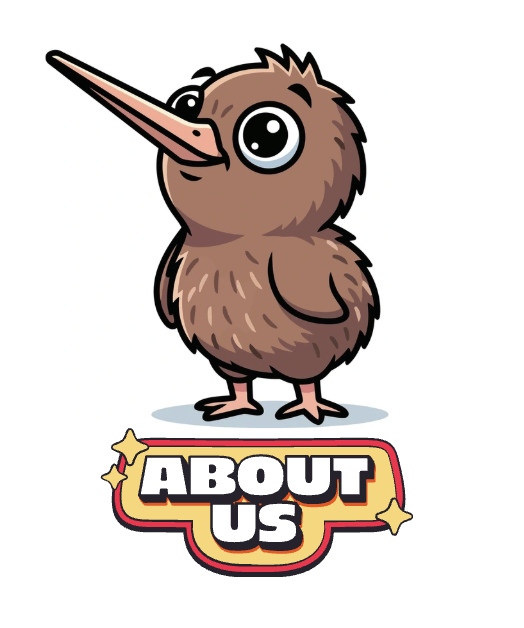

Prologue
Long ago, the forest flourished with life and the canopy was filled with birdsong. But insects from the ground crawled up and down the tree trunks, eating as they went, slowly killing the giants of the forest from the inside out.
Tānemahuta and his brother Tānehokahoka asked the birds of the air for a volunteer to leave the canopy and live on the ground to eat the bugs that were killing the trees. Tūī was scared of the dark, Pūkeko didn’t want to get his feet wet, and Pīpīwharauroa was just too busy to help. But one bird was prepared to leave his home and his friends for the sake of the rest of the forest.
That bird was Kiwi. Kiwi sacrificed his wings, bright colours, and home in the branches to reside on the cold, dark, damp forest floor for the rest of his days. And for his great sacrifice and selfless service, he became the most well-known and most loved bird of them all.
But now, the bird that sacrificed his wings to serve the rest of the forest is in trouble. Stoats and other introduced predators have replaced insects as the threat. The ground is no longer safe for Kiwi. Day and night, Kiwi lives in fear.
Where the work is being done, kiwi are returning to Aotearoa. But the national kiwi population is still declining by 2% every year, and many New Zealanders have no idea that our national icon is in danger of disappearing from the wild altogether.
Save the Kiwi started out in 2026 as a Kiwi Recovery programme, partnering with the Department of Conservation, and the Royal Forest and Bird Protection Society. We are a non-charitable organisation aiming to prioritise New Zealand's unique wildlife and protect it! Through fundraisers, volunteer camps, and collaboration with other wildlife organisations, we aim to shift the status of New Zealand species from endangered to everywhere, ensuring these iconic, taonga species survives for future generations.